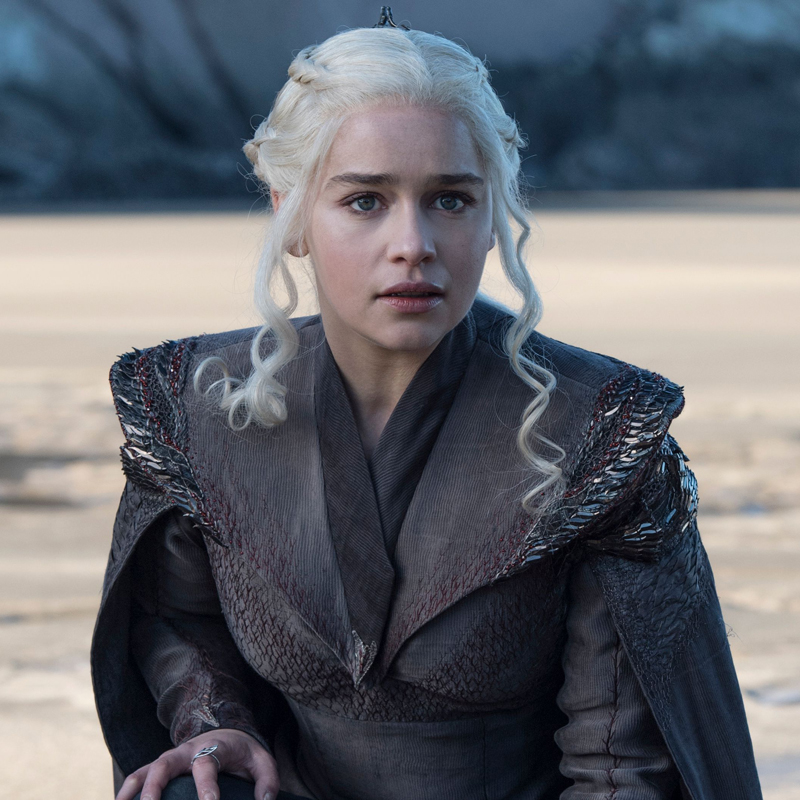

A continuación se presentan algunos de los personajes más importantes de Game of Thrones:

Jon Snow
Jon Snow es uno de los personajes principales de la serie. Es conocido por su sentido del honor y su valentía.
"El bastardo de Invernalia"
- Casa: Stark (y Targaryen)
- Aliados: La Guardia de la Noche, Sansa, Samwell, Daenerys
- Enemigos: Caminantes Blancos, Ramsay Bolton
- Ubicación: Norte de Westeros
- Estado: Vivo

Daenerys Targaryen
Daenerys es la última sobreviviente de la dinastía Targaryen y busca recuperar el trono que le fue arrebatado a su familia.
"La Madre de Dragones"
- Casa: Targaryen
- Aliados: Jorah, Missandei, Gusano Gris, Jon Snow
- Enemigos: Cersei Lannister, Maestros de Meereen
- Ubicación: Essos y Poniente
- Estado: Fallecida

Tyrion Lannister
Tyrion es un personaje astuto e inteligente, a menudo subestimado por su familia debido a su estatura.
"El Gnomo"
- Casa: Lannister
- Aliados: Jaime, Bronn, Daenerys
- Enemigos: Cersei, Tywin, Joffrey
- Ubicación: Desembarco del Rey
- Estado: Vivo